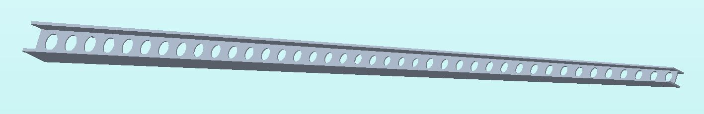
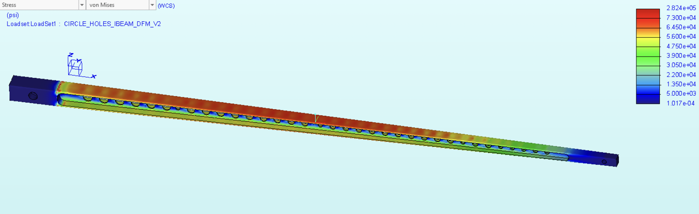
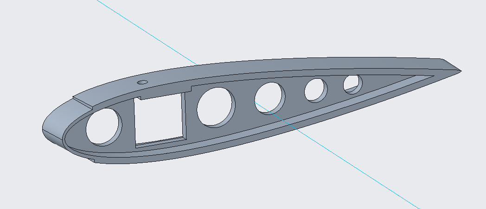
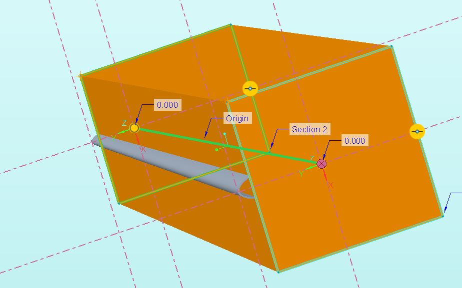
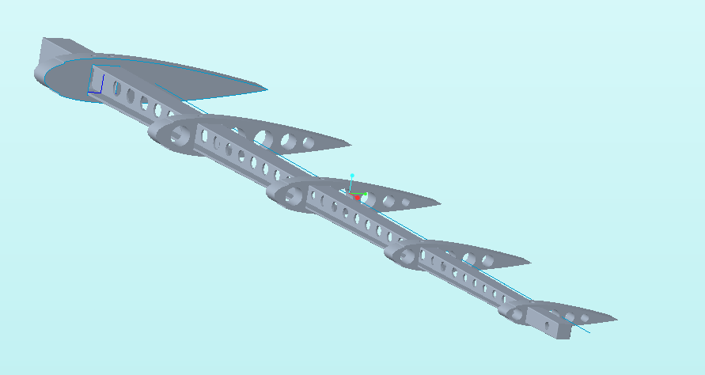
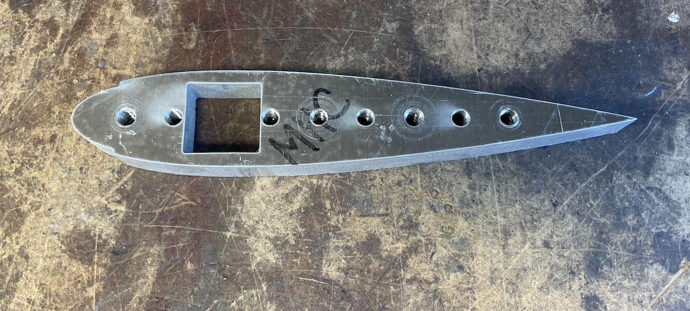
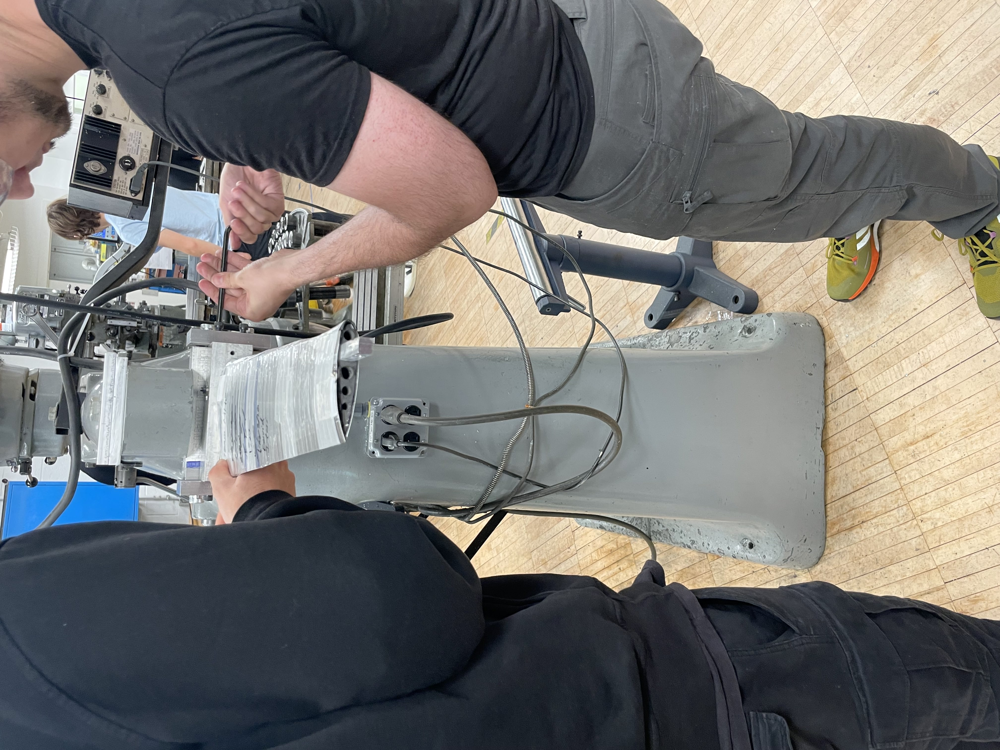
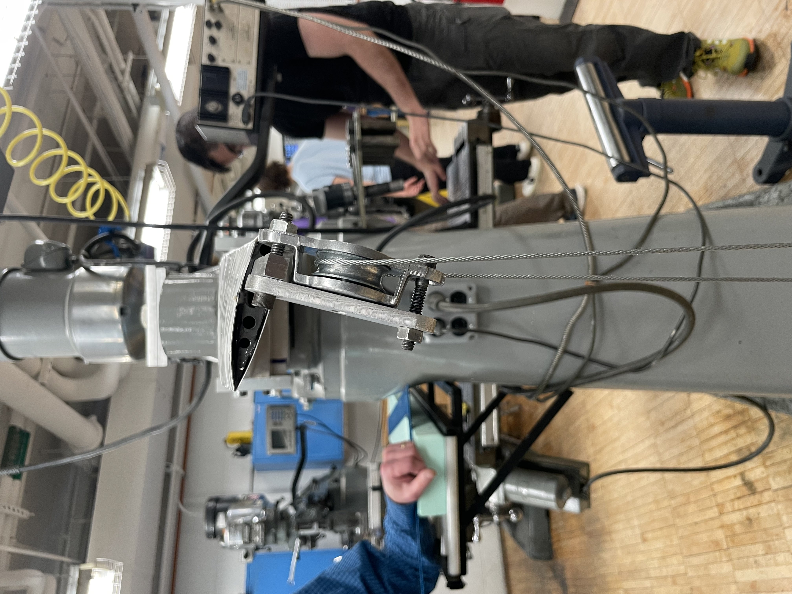
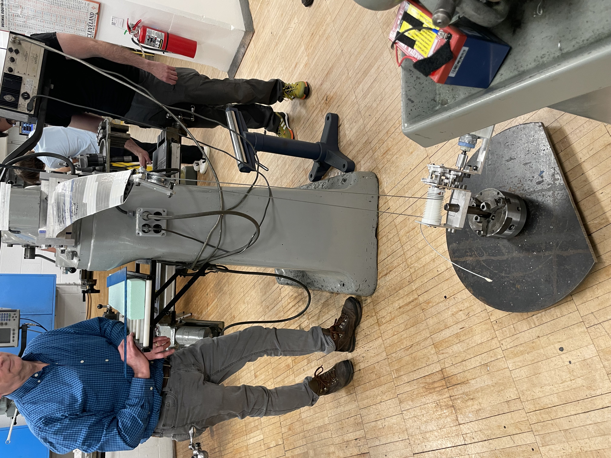

Abstract
The main objective of this project was to design and manufacture an aircraft wing that
could withstand a load of 97 lbf applied 23.5 inches from the secured end while minimizing
the weight, deflection, and cost of manufacturing of the entire assembly. In order to accomplish
this task, we sought out four different beam designs, but eventually settled on an I-beam with
circular holes in the web. An I-beam design is optimized for withstanding bending loads such as
this, and the circular holes were found to be the best way to optimize for weight that did not
lead to weakness in the beam and subsequent stress concentrations. The yield stress of the beam
material--aluminum 7075 (T651)--was 73000 psi.
We also came up with four designs for the bulkhead,
of which a solid bulkhead with circular holes was chosen. We then manufactured all the necessary
parts: the beam was milled using a computer numerically controlled machine, the primary aluminum
bulkhead was waterjetted, the remaining bulkheads and the leading edge were 3-D printed with nylon,
and the skin was cut via a bandsaw. Our final design cost a total of $180.75 and weighed 18.3 oz.
We successfully lifted the 97 lbf load with a vertical displacement of 3.75 in, and then failed
when testing a load of 120 lbs. Some improvements to the design would be making notches in the
leading edge so the three sections could fit snugly together and reducing the number of bulkheads
to minimize weight further. Given that the beam failure was caused mainly by the torsion due to
the load, one might also consider increasing the web thickness despite the added weight.
One potential trade study could be to analyze whether a thicker skin, and thus a lighter beam,
might lead to weight savings.
All design and analysis was done in PTC CREO, and material properties were imported from Cambridge
Engineering Selector (CES) software. 3-D printed parts were sliced in Ultimaker Cura 5.3.0. All
material specifications and orders were made through McMaster-Carr.
Design
During the initial design phase, we decided to have several teams simultaneously working on different
design aspects of the wing. We first split the team into either beam or bulkhead design. The beam
part of the team was divided into two groups. The entire team decided that an I-beam would be the
primary choice of beam design, as their intended purpose aligns with the goal of this project. Each
group worked on designing and optimizing two different I-beam configurations. The first group was
assigned to work on a solid I-beam and an I-beam with a truss structure in the web. The second group
was assigned to work on an I-beam with circular holes in the web and a double I-beam (I-beam with a
double web). Both groups would first design their beams to meet the 97 lbf load requirement and then
optimize for weight while still meeting this requirement.
Our Selected I-Beam
FEA on Our Selected I-Beam
 Three members of the team were assigned to work on the bulkheads. Their primary goal was to design manufacturable bulkheads with the least weight, as there was no analysis to run on their bulkheads themselves; rather, they could only be tested in the entire assembly once completed. In discussions of the material to be used, aluminum versus 3D-printed nylon, the group tended towards nylon as the eventual choice for the bulkheads, as it minimized weight while simplifying the bulkhead's manufacturing process. Several design choices for the bulkheads were drawn up, including hollow bulkheads with vertical members to fit the beam between them, bulkheads with internal trusses, and bulkheads with circular hole cutouts.Bulkhead Design
The design was optimized through repeated modifications of specific primary dimensions according to the results from the prior FEA. This allowed the parts to converge to an optimal combination of strength and weight. This combination was crucial for the design of the beams. In their case, the primary dimensions to optimize were web and flange thickness as well has truss/hole dimensions. Optimization of the bulkheads was conducted slightly differently, where they were designed to have the least amount of weight while still keeping the frame of the airfoil and having enough outer surface area to support the skin.
Leading Edge
I-Beam and Bulkheads
Full Airfoil Assembly FEA

Manufacturing
Manufacturing of the wing's components included multiple tools and machines, including a Haas VF-7/40
Vertical CNC Milling machine, a ProtoMAX waterjet machine, a Creality Ender 3 Pro 3-D printer, a
Formlabs Selective Laser Sintering (SLS) 3-D printer, and the machine shop's bandsaw and sander.
The beam was milled from a 1 x 3/4 x 36-inch stock; the aluminum bulkhead was waterjetted from a
4 x 6 x 1/2-inch stock. The skin was cut from two aluminum sheets of different thicknesses
(0.032 and 0.016 inches) with the bandsaw, the leading edge was printed in the Ender 3 Pro, and the
secondary bulkheads were printed in the Formlabs printer.
Waterjetted Aluminum Bulkhead
Once all the parts were ready, the wing was assembled over the course of several days and subsequently tested with the 97 lbf load to determine its performance in terms of the vertical deflection of the wingtip relative to the mount.
Testing, Results, and Conclusion
Ultimately, our wing successfully passed the 97lbf load test with minimal permanent deflection.
With the load applied, the wing deflected a total of 3.75 inches, which is substantial but reasonable.
The lbf load was applied to the airfoil through the use of a winch-pulley system to raise a 97 lb weight
off the ground.
Airfoil Before Testing
Airfoil As The Load is Being Applied
After completing this required test, we progressively increased the load to 120 lbf to further test the strength of our wing and determine the points of weakness. Although the wing seemed to lift the weight briefly, the load caused permanent deflection and fractured the beam. The beam failed at a distance of roughly 1/3 the wing length from the fixture point. After cutting open the skin, it was evident that the beam had failed due to torsion, which caused the web to collapse and subsequently led to permanent bending along the flanges. This was reasonably expected, given our thin web thickness of 0.05". In our CREO analysis of the beam, the load was applied perfectly vertically, which differed significantly from the torqued load during the physical test. Although our chosen web thickness was perfect for our intended load, one might consider increasing the web thickness in order to accommodate higher loads.
Airfoil With Significant Deflection
We also found that the last bulkhead was cracked and detached from the beam. During the manufacturing process, this bulkhead also cracked under the pressure of the rivet, which was another anticipated weak point. Future design iterations might consider having a solid nylon bulkhead or an aluminum bulkhead at the end.
This result was very promising because our goal was to lift just 97 lbf while minimizing weight and deflection. This shows that our beam was engineered well to meet the design requirements without adding extra weight.